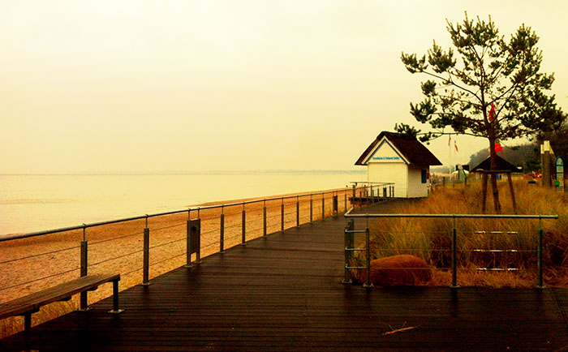

Mitmachen
Wir freuen uns über neue Mitglieder! Die einzige bedingung die wir stellen m√ºssen ist, dass du auf die Gustav-Heinemann Oberschule gehst. Dien alter ist egal, du musst auch nicht Japanisch können oder lernen auch wenn immoment alle mitglieder Japanisch lernen oder gelernt haben.
Termine:
Im letzten Schuljahr haben wir uns immer am Dienstag um 14:10 vor dem Japanischem Garten getroffen. Wenn du um 14:10 (anfang 8. Stunde) nicht kannst könntest du auch später kommen oder über einen anderen Termin mit dre AG-Leitung sprechen.